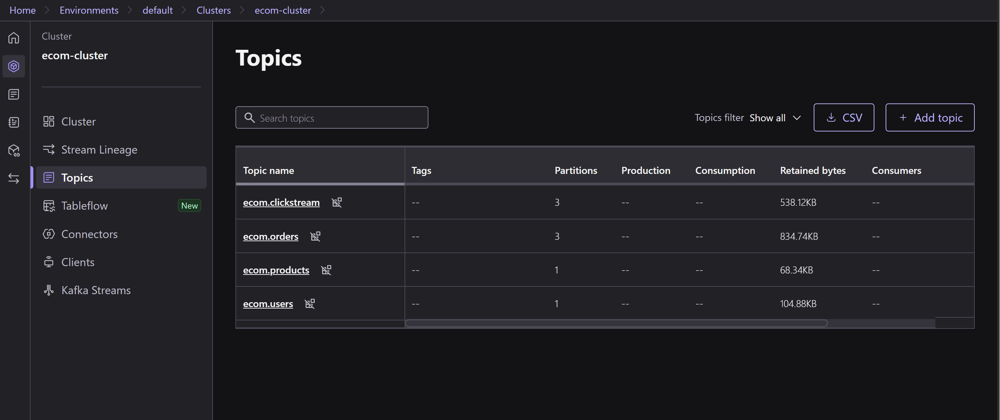
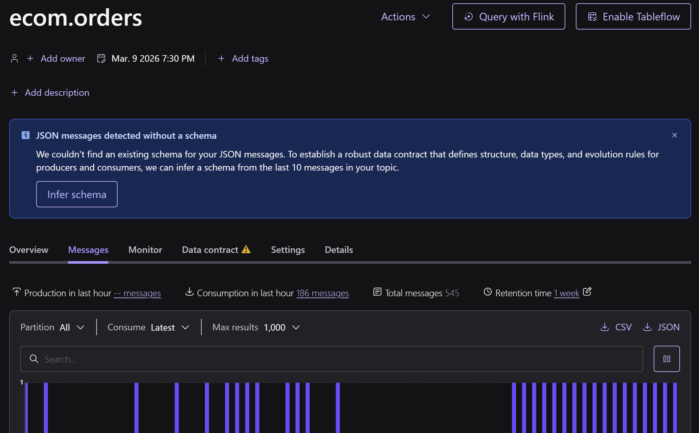
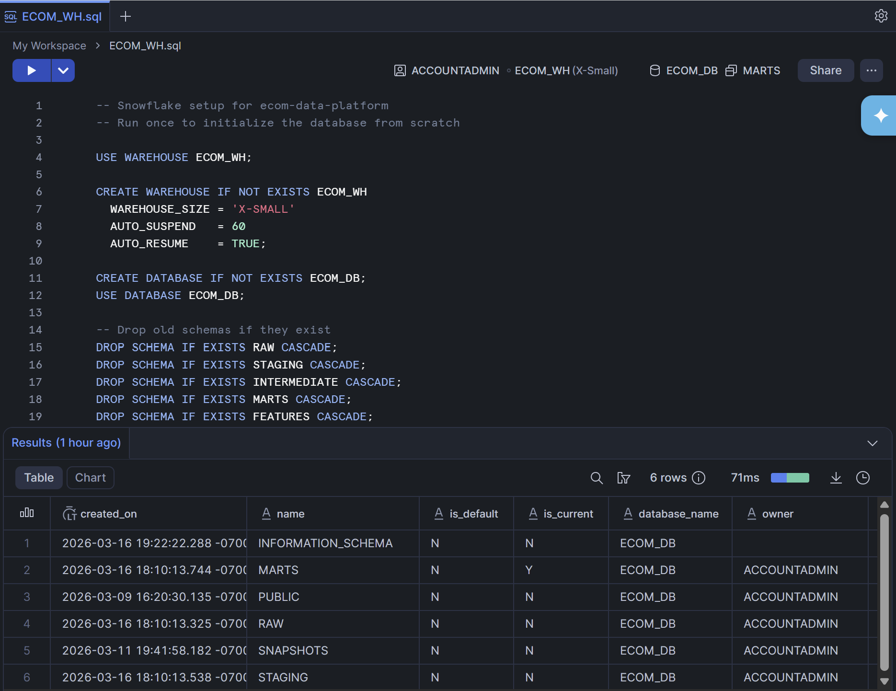
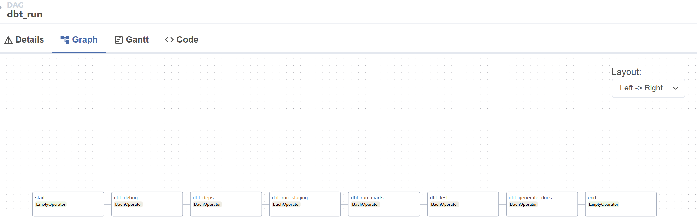

E-Commerce Data Platform
A full-stack analytics platform that takes e-commerce events from Confluent Kafka, lands them in AWS S3 via a custom Airflow operator, loads into Snowflake, transforms with dbt star schema models, and validates with 30+ automated data quality checks across critical, warning, and info severity tiers.
- Kafka Topics
- 4
- DQ Checks
- 30+
Problem
What This Was Built to Demonstrate
The fintech pipeline proved the batch medallion pattern on real infrastructure. This project was built to demonstrate something different: a streaming ingestion layer, a cloud data warehouse, a proper dbt transformation stack, and a tiered data quality framework — all wired together in a single end-to-end platform on real cloud services.
E-commerce was the right domain for this. It generates multiple event types naturally — orders, products, users, clickstream — which made it a realistic test of a multi-topic Kafka setup and a star schema with real relationships between fact and dimension tables. The 30+ data quality checks came directly from thinking through what would actually fail in a real e-commerce pipeline: late-arriving orders, missing user IDs, clickstream events with no corresponding session, revenue fields with negative values.
Kafka Streaming
Confluent Kafka — 4 Topics, Real Messages
Events produced to Confluent Cloud, consumed via a custom Airflow operator that batches and stages to AWS S3.

ecom-cluster with 4 active topics: orders, users, products, clickstream
ecom.orders topic — 545 total messages, 186 consumed in last hour · Real message activity histogram
The four topics map directly to the four event types in the e-commerce domain.
ecom.orders and ecom.clickstream each use 3 partitions —
higher throughput events that benefit from parallel consumption. ecom.products
and ecom.users run on 1 partition — lower volume, slower-changing reference data.
All topics use 1-week retention.
A custom Airflow operator handles consumption: it polls each topic, batches messages, serializes to JSON, and stages the batch files to AWS S3 before the Snowflake load step. This decouples the streaming ingestion from the warehouse load — if the Snowflake step fails, the S3 stage is preserved and the load can be retried without re-consuming from Kafka.
Snowflake Setup
ECOM_DB — 6 Schemas, Auto-Suspend Warehouse
Snowflake as the analytics warehouse — schema-per-layer design matching the transformation stages.

ECOM_DB — 6 schemas confirmed after initialization: RAW, STAGING, MARTS, SNAPSHOTS, plus system schemas · Warehouse: X-Small, auto-suspend 60s
The warehouse setup is scripted and idempotent — CREATE WAREHOUSE IF NOT EXISTS,
CREATE DATABASE IF NOT EXISTS, then schema creation. Running it twice doesn't
break anything. The AUTO_SUSPEND = 60 setting means the warehouse pauses after
60 seconds of inactivity, which keeps costs near zero between runs for a personal project.
RAW schema
Kafka messages loaded directly from S3 staging files. Minimal transformation — just what's needed to land data into typed Snowflake tables.
STAGING schema
dbt staging models — type casting, renaming, light enrichment. One model per source topic. Intermediate cleanup before mart logic.
MARTS schema
Star schema fact and dimension tables. Business logic implemented once, consumed by any downstream analyst or BI tool.
SNAPSHOTS schema
dbt snapshots capturing slowly changing dimensions — product price history, user profile changes over time.
Orchestration
Three DAGs, One Pipeline
Airflow orchestrates the full pipeline across three DAGs — ingestion, loading, and dbt transformation.

dbt_run DAG — 8 tasks: debug → deps → staging → marts → test → generate docs · EmptyOperators bookend the pipeline for clean dependency management
The dbt_run DAG is the transformation layer — it runs after the Snowflake load
completes. The task sequence is deliberate: dbt_debug validates the connection
before any work starts; dbt_deps installs package dependencies;
dbt_run_staging and dbt_run_marts execute models in dependency order;
dbt_test runs the full test suite; dbt_generate_docs refreshes
the lineage documentation. If tests fail, the DAG stops — nothing downstream runs on bad data.
kafka_to_s3
Consumes all 4 Kafka topics, batches messages, writes JSON staging files to AWS S3. Custom Airflow operator handles backoff and partial batch recovery.
s3_to_snowflake
Loads staged S3 files into Snowflake RAW schema via COPY INTO. Idempotent — files already loaded are skipped via Snowflake's load history tracking.
dbt_run
8-task DAG transforming RAW → STAGING → MARTS, running dbt tests, and regenerating lineage docs. Triggered downstream of a successful s3_to_snowflake run.
dbt Modeling
4 Models, Star Schema, 30+ Tests
Staging and mart models that implement the business logic once and expose it consistently to all consumers.
The dbt project has four mart models built on staging models sourced from each Kafka topic.
The staging layer handles type casting, column standardization, and light cleaning.
The mart layer implements the dimensional design — a central fct_orders fact table
surrounded by dim_users, dim_products, and dim_dates.
fct_orders
Central fact table. One row per order, with foreign keys to all dimension tables. Includes derived revenue fields, order status transitions, and fulfillment timing.
dim_users
Customer dimension sourced from ecom.users Kafka topic. Slowly changing via dbt snapshots — user profile changes are tracked without overwriting history.
dim_products
Product catalog dimension sourced from ecom.products. Price history tracked via snapshots — enables accurate revenue calculation at historical prices.
dim_dates
Date spine generated by dbt. Enables period-over-period analysis without relying on Snowflake date functions in every downstream query.
Data Quality
30+ Checks, Three Severity Tiers
Not just not-null and unique. Checks that reflect real failure modes in a live e-commerce platform.
The DQ framework uses three severity tiers: critical checks that fail the pipeline on violation, warning checks that surface alerts without stopping the run, and info checks that log anomalies for review. This distinction matters — you don't want a minor data drift event to halt the entire pipeline, but you do want schema-breaking failures to stop immediately.
Critical — pipeline blocking
Order IDs must be unique and non-null. Revenue fields must be non-negative. Foreign key relationships between fct_orders and all dimensions must hold. Schema columns must match expected types.
Warning — alert, don't stop
Row count drops more than 20% vs prior run. Clickstream event rate drops below baseline. Product price changes exceed expected variance. User signup rate anomalies.
Info — log for review
Late-arriving events outside the expected ingestion window. Orders with no corresponding clickstream session. High-value orders without matching product catalog entries.
Results
What This Project Demonstrates
- Real Confluent Kafka cluster with 4 active topics and live message activity — the ecom.orders screenshot shows 545 actual messages, not generated test data.
- Real Snowflake database with 6 schemas confirmed after setup — the SQL worksheet screenshot is from the live ECOM_DB, not a local mock.
- Custom Airflow operator decouples Kafka consumption from Snowflake loading — if either step fails, the S3 staging layer preserves the data and the failed step can be retried independently.
- Star schema with snapshots tracking slowly changing dimensions — product price history and user profile changes are preserved, so historical revenue calculations stay accurate over time.
Tradeoffs
Honest Limitations
- Micro-batch, not true streaming
- The custom Airflow operator polls Kafka on a schedule rather than consuming in real time. For a true streaming architecture, a Kafka Connect sink connector or Spark Structured Streaming would be more appropriate — consuming continuously and landing to S3 with sub-minute latency rather than on a batch interval.
- Snowflake X-Small warehouse has limits
- The auto-suspend warehouse is cost-effective for a personal project but wouldn't be appropriate for concurrent production workloads. A production setup would need workload management — separate warehouses for ingestion, transformation, and BI queries — to prevent contention and guarantee SLAs.
- DQ thresholds are static
- Warning thresholds (row count drops >20%, price variance, signup rate) are hard-coded from expected baseline values. In a real system, these should be statistically derived from rolling historical distributions — making the system self-calibrating and reducing both false positives and missed anomalies over time.
Stack
Technologies
Want to Go Deeper?
Happy to walk through the custom Kafka operator design, the dbt model structure, how the three-tier DQ framework was implemented, or the Snowflake schema architecture.